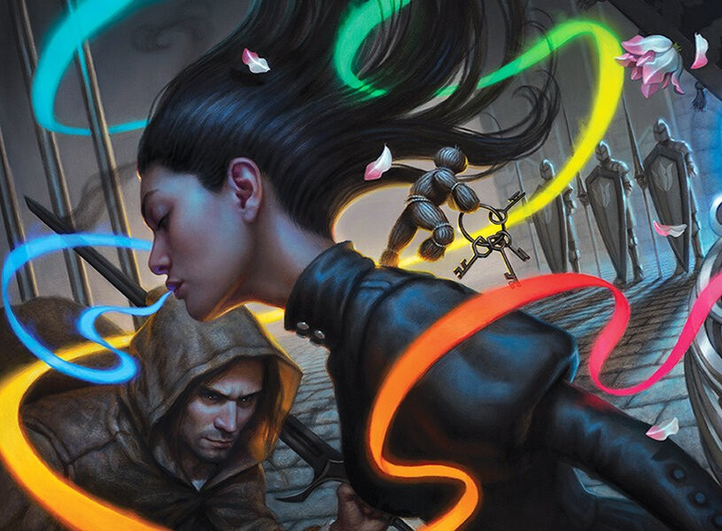

NALTHIS
A planet of gods and color, with grand cities and empires, and magic imbued in the hearts of its people.
The planet's cultures are very rich, with differences between nations. These differences are mostly of their ideals and philosophies. The first, the Kingdom of Hallandren, is a rich, extravagant kingdom, ruled by the God-King, while the neighboring kingdom of Idris is simple and colorful. Most of all, the people of Idris value humility and simplicity above all.

NALTHIAN SYSTEM
The Nalthian system is a relatively small planetary system. It includes one gas giant, one outer planet, and a comet belt. The most notable planet is Nalthis, the only inhabited planet in the system. The gas giants comprise of Farkeeper the Bright, and Nightstar the Hidden.

INHABITANTS
The inhabitants of Nalthis are varied, with their own different cultures and philosophies.. Hallandren’s society is characterized by being grandiose, scattered with vivid colors, and a strong emphasis on the people known as the Returned, who are seen as gods come back to life.
While the people of Idris, a kingdom found in the mountains far from Hallandren, do not believe in such grand things and choose a simpler and more humble lifestyle.
BREATH
Breath is a unique form of power and is important for every person. Each person is born with one Breath. It can be given to others, or even be used to imbue objects, almost bringing them to life. This act of imbuing items is called Awakening.
Those who possess many Breaths gain enhanced senses and abilities, with different steps of enhanced powers depending on how many Breaths you have.
